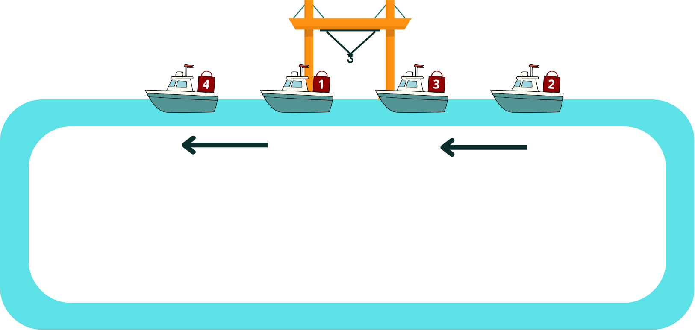
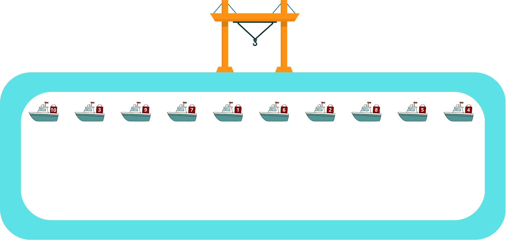
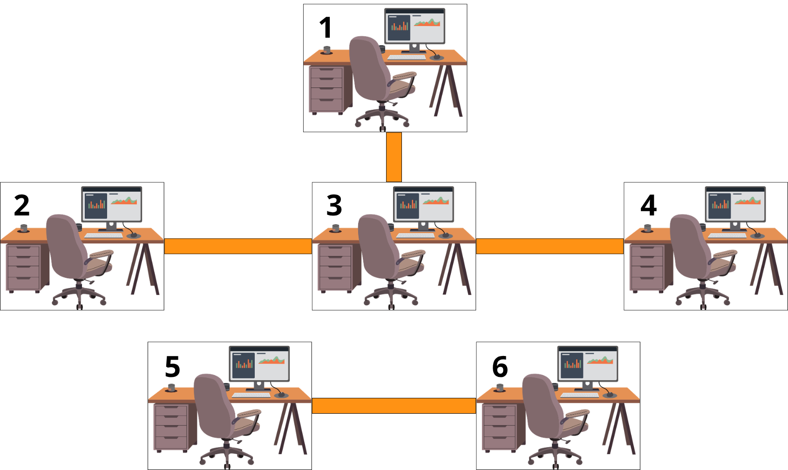
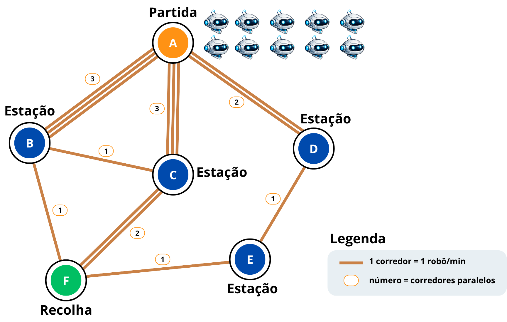
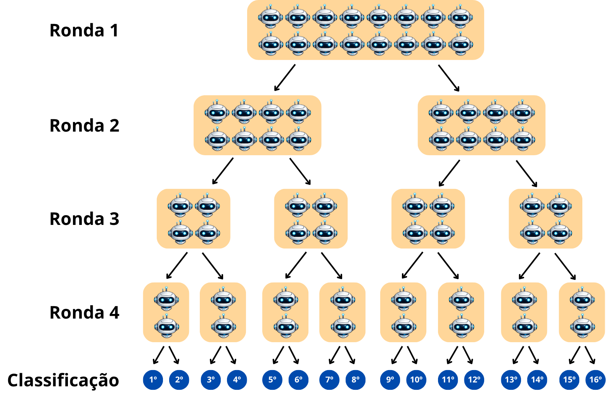

Objetivos do Pós-Teste
- Avaliar a evolução das aprendizagens.
- Verificar a eficácia pedagógica do recurso SmartPark.
- Analisar a motivação e envolvimento dos alunos.
- Identificar dificuldades e sugestões de melhoria.
Identificação do aluno
Exercício 1
Descargas no Porto
Um porto de mercadorias tem vários barcos alinhados num canal de circulação, cada um transportando uma caixa numerada. Um único guindaste portuário é utilizado para descarregar as caixas.
O guindaste está instalado numa posição fixa junto ao cais. Para descarregar uma caixa, o barco que a transporta tem de ficar parado diretamente em frente ao guindaste.
As caixas têm de ser descarregadas por ordem crescente, a partir da caixa 1.
Os barcos só podem avançar num único sentido ao longo do canal. Como o canal forma um circuito fechado, os barcos podem dar a volta ao porto e regressar novamente ao cais, para que outras caixas possam ser descarregadas pelo guindaste.
Exemplo: descargas no porto
Sequência dos barcos: 4 - 1 - 3 - 2

No exemplo acima, as caixas têm de ser descarregadas na sequência 1, 2, 3, 4.
Na primeira volta de descarga, o guindaste ignora o barco com a caixa 4, descarrega a caixa 1, ignora o barco com a caixa 3 e descarrega a caixa 2.
Na segunda volta, ignora novamente o barco com a caixa 4 e descarrega a caixa 3.
Os barcos têm de dar ainda uma terceira volta para que o guindaste possa descarregar a última caixa, a caixa 4.

Pergunta
Quantas voltas serão necessárias para descarregar todas as caixas dos barcos seguintes?
Sequência: 10 - 3 - 9 - 7 - 1 - 6 - 2 - 8 - 5 - 4
Exercício 2
Os Gabinetes do Clube de Robótica
Na escola existe um Clube de Robótica com vários gabinetes numerados. Alguns gabinetes estão ligados por corredores.
Dizemos que duas pessoas são vizinhas de gabinete quando existe um corredor direto entre os gabinetes onde trabalham.
Informação disponível
- A Ana tem exatamente 1 vizinho de gabinete.
- A Ana é vizinha do Bruno.
- O Bruno trabalha num gabinete com 3 vizinhos.
- A Carla trabalha num gabinete com 1 vizinho.
- O Diogo trabalha num gabinete que não está ligado ao gabinete da Ana.
Observa o mapa dos gabinetes:

Um corredor direto = um vizinho.
1. Quem pode ser vizinho da Ana, sabendo que ela só tem 1 vizinho?
2. Se uma pessoa trabalha num gabinete com 3 corredores ligados, quantos vizinhos de gabinete tem essa pessoa?
3. Qual é o gabinete onde pode trabalhar o Bruno?
4. Que gabinetes têm exatamente 1 vizinho?
Exercício 3
A Mensagem do Arquivo Digital
Durante a preparação de uma exposição sobre a história da informática, uma turma encontrou uma pasta antiga guardada no servidor da escola. Dentro dessa pasta havia uma tabela de códigos usada para esconder pequenas mensagens.
Depois de observar a tabela, os alunos perceberam que cada letra é obtida combinando dois elementos: o símbolo da linha e o símbolo da coluna correspondente.
Por exemplo, se uma letra estiver na linha verde e na coluna III, o símbolo codificado junta esses dois sinais.
Código de arquivo digital

Como funciona?
Cada símbolo codificado junta uma forma da linha com um sinal da coluna correspondente.

Mensagem encontrada no arquivo
Pergunta
Qual é a mensagem que está escondida no arquivo digital?
Exercício 4
Cartões e Envelopes
A Inês trabalha na secretaria de uma escola, onde prepara cartas para enviar aos encarregados de educação. À sua frente passa um tapete rolante com cartões de identificação e envelopes vazios.
A descrição do trabalho da Inês é a seguinte:
- Retira cada objeto do tapete, um de cada vez, da esquerda para a direita.
- Quando retira um cartão, coloca-o numa caixa ao seu lado.
- Quando retira um envelope, pega num cartão da caixa, coloca-o dentro do envelope e põe a carta pronta numa bandeja.
Processar da esquerda para a direita.

Podem acontecer dois problemas:
- Se aparecer um envelope e não houver nenhum cartão disponível na caixa, a carta não pode ser preparada.
- Se o tapete acabar e ainda sobrarem cartões na caixa, ficaram cartões sem envelope.
Pergunta
Qual das seguintes sequências de cartões e envelopes, quando processada da esquerda para a direita, não causa problemas à Inês?
Exercício 5
O Percurso do Robô
O Luís está a testar um pequeno robô num laboratório de programação. O robô começa na primeira casa, assinalada a verde. Em cada casa, o robô segue sempre a mesma regra:
- conta o número de setas desenhadas nessa casa.
- avança esse número de casas na direção indicada pelas setas.
- repete o processo a partir da nova casa onde parar.
Uma das casas do percurso está vazia. O Luís precisa de escolher que setas deve desenhar nessa casa para que o robô consiga chegar à casa final.

Pergunta
O que é que a Inês precisa de desenhar na casa vazia para o robô conseguir chegar ao fim?
Exercício 6
Entregas no Festival
Num festival de tecnologia, há 10 pequenos robôs de entrega na estação A.
Todos precisam de levar encomendas até à estação F, onde fica o ponto de recolha.
As estações estão ligadas por corredores estreitos. Em cada corredor só pode passar um robô de cada vez.
Cada robô demora 1 minuto a deslocar-se de uma estação para outra.
Observa o mapa:

Informação do mapa:
| A está ligada a B por 3 corredores. | B está ligada a C por 1 corredor. |
| A está ligada a C por 3 corredores. | C está ligada a F por 2 corredores. |
| A está ligada a D por 2 corredores. | D está ligada a E por 1 corredor. |
| B está ligada a F por 1 corredor. | E está ligada a F por 1 corredor. |
Pergunta
Qual é o número máximo de robôs que consegue chegar à estação F ao fim de 3 minutos?
robôs
Exercício 7
RoboLiga
Hoje é o torneio anual de RoboLiga. Dezasseis mini-robôs chegaram para competir em quatro rondas, com o objetivo de determinar a classificação geral do 1.º ao 16.º lugar.
Todos os mini-robôs competem juntos na ronda 1. Depois de cada ronda, os concorrentes separam-se: os que vencem seguem a seta da esquerda para a ronda seguinte da competição, enquanto os que perdem seguem a seta da direita para a ronda seguinte ou para a classificação final.
Por exemplo, um mini-robô que vença nas rondas 1 e 2, mas perca nas rondas 3 e 4, fica classificado em 4.º lugar.

Pergunta
O Tomás programou um dos mini-robôs da RoboLiga. Esse robô perdeu exatamente uma única ronda e venceu as outras três. Em qual dos seguintes lugares ele não pode ter ficado?